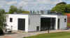
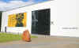
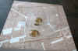
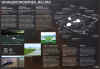
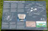
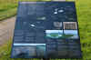
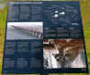

Am 04.06.2015 fand ich auch die Zeit in Jelling vorbeizuschauen. Leider war das Museum infolge des Umbaus noch geschlossen (aber es war gerade die Eröffnungsfeierlichkeit im Gange - siehe Fotos) und wurde erst ab dem Wochenende 06./07.06.2015 wieder der Öffentlichkeit präsentiert. Der Eingang zum Museumsgebäude wurde von der Straßenseite auf die Rückseite in den Hof verlegt. Im Verlauf der Ausstellung kann man auf die neu angelegte Dachterasse und hat wohl von dort einen tollen Blick auf die beiden Grabhügel und die dazwischenliegende Kirche mit den beiden Runensteinen. Die Konzeption wurde auch weg vom reinen Museum alter Art zum Besucher-Erlebnis-Zentrum ausgeführt. Nach allem was ich darüber in Erfahrung bringen konnte, wurde es supermodern mit allen digitalen Schikanen ausgestattet.
  


Leider konnte ich dieses Erlebnis nicht genießen, da ich zu der Zeit schon wieder auf der Heimreise war - also dann halt beim nächsten Besuch in Jelling!
Bei einem ausgiebigen Rundgang durchs Gelände konnte ich aber dafür erstmals den inzwischen komplett fertigestellte Palisadenwall erleben. Zuletzt war ich im August 2013 in Jelling gewesen. Die Palisade wurde zwischenzeitlich fertiggestellt, in der nordwestlichen Ecke sogar noch erweitert (gegenüber dem Luftbild der Gemeinde) und der Teich "Smededammen" wurde wiederhergestellt.


Im Gelände sind auch an mehreren Stellen Informationstafeln zum aktuellen Wissensstand des Gesamtkomplexes aufgestellt (Text jeweils in DK/GB/D). Auf einigen Tafeln findet sich bedauerlicherweise ein Übersetzungsfehler im deutschen Text. Die Maßangaben zum Nordhügel wurden vertauscht (8,5 m breit und 65 m hoch!).
   


Eine Gesamt-Fotoübersicht dazu findet sich hier.
Seit geraumer Zeit gibt es für das iPad und das iPad Mini auch die App "App om VerdensArv", über die die drei dänischen Weltkulturerbestätten der UNESCO - Jelling / Dom zu Roskilde / Schloss Kronborg - vorgestellt werden. Neben der reinen Ausgabe in dänischer Sprache können englische Untertitel zusätzlich angewählt werden. Man kann sich darüber z.B. einen Übersichtsplan der Monumente in Jelling, eine 360° Ansicht vom Nordhügel, den beiden Runensteinen und der (Nordspitze der) Schiffssetzung abrufen.
16.06.2015
Am 04.06.2015 konnte ich im Rahmen eines DK-Urlaubes das neue MOMU - Moesgård Museum südlich von Århus besuchen, das erst am 11.10.2014 eröffnet wurde.

Es ist der Nachfolger des alten Prähistorischen Museums im Herrenhof Moesgård, der sich in unmittelbarter Nachbarschaft befindet. In dem spektakulären Neubau finden sich verschiedene Abteilungen und zeitweise Sonderausstellungen (z.B. z.Zt. bis 30.09.2015 insgesamt 120 Originalstücke aus dem Grabfund des sagenumwobenen ersten chinesischen Kaisers Qin Shihuangdi, *259 v.Chr. - 210 v.Chr., der vielen durch sein Mausoleum mit den 8000 lebensgroßen Terrakottasoldaten bekannt wurde).

Die Wikingerabteilung beherbergt auch die sieben Runensteine, die in und um Århus gefunden wurden. Eine Fotoübersicht dazu findet sich hier (folgt demnächst).
Außerdem ist einige Räume nebenan die 1952 gefundene Moorleiche "Grauballemann", die im 3. Jh. v.Chr. starb, ausgestellt.


15.11.2014
Ich habe die Tage über das Internet in einem dänischen Antiquariat das beeindruckende Druckwerk "Kongehøiene i Jellinge og deres Undersøgelse efter Kong Frederik VII's Befaling i 1861" von Jacob Kornerup (mit einem Vorwort von J.J.A. Worsaae) aus dem Jahr 1875, Bianco Lunos Buchdruckerei, Kopenhagen, ca. 30 x 40 cm, mit 23 Tafeln und 5 "kemitypier" (Photochemischer Klischeedruck), erworben. Eine Fotoshow dazu habe ich hier eingestellt.
29.09.2014
Die Tage wurde ich im Internet auf den sensationellen Fund einer weiteren dänischen Ringburg bei Vallø/Seeland, in der Nähe der Stadt Køge, aufmerksam. Es ist nun die fünfte Burg ihrer Art nach den Ringburgen von Trelleborg (erforscht 1934-42), Aggersborg (1945-52), Fyrkat (1950-59) und Nonnebakken (ca. 1953), erstmals nach ca. 60 Jahren ein gleichartiger Fund. Der Professor für Archäologie des Mittelalters Søren Sindbæk von der Universität Aarhus und seine Kollegin Nanna Holm vom dänischen Burgenzentrum in Vordingborg wurden mit den Methoden der Geophysik fündig, wo mit bloßem Auge im Gelände nicht wirklich etwas erkennbar war. "Es war ein gutes Stück Detektivarbeit", erläuterte der Archäologe. "Indem wir geringe Unterschiede im Magnetismus des Bodens messen, können wir archäologische Strukturen erkennen, ohne nach ihnen graben zu müssen", erklärt Sindbæk. "So erhielten wir innerhalb weniger Tage ein erstaunlich detailliertes Geisterbild der Burg und wussten dann genau, wo wir graben mussten." Unterstützt wurden die dänischen Forscher dabei von Helen Goodchild, Expertin für archäologische Geophysik an der Universität von York in England.
Zwei von vier Eingängen konnten bereits lokalisiert / ergraben werden. Am Nordtor fanden sich Spuren von massiven verbrannten Eichenhölzern, deren Untersuchung/Datierung zur Zeit noch andauert und deren Ergebnisse in wenigen Wochen vorliegen sollten. Auch diese Ringburg vom sogenannten Trelleborg-Typ wird zumindest vorläufig der Regierungszeit Harald Blauzahns zugeschrieben und von daher auf das Jahr 980 n. Chr. datiert.
Gespannt sind die Forscher auch auf die Untersuchungen im Innern der Burganlage. Die nächste Frage wird nämlich sein, ob es wie bei den anderen Ringburgen im Innern der kreisrunden Anlage mit 145 m Durchmesser Gebäude mit gleichem Muster gibt. "Die Erkundung der Burg wird eine wunderbare Entdeckungsreise", meinte Sindbæk.
Warum all diese Ringburgen angelegt wurden, ist immer noch Gegenstand der wissenschaftlichen Diskussion. Inzwischen wurde auch die These einer Verwendung als "Königspfalz" eingebracht, während man früher von reinen Militäranlagen zur äußeren Verteidigung, oder inneren Reichseinigung, bzw. als Basislager im Hinblick auf die Eroberungszüge nach England ausging.
Einen deutschsprachigen SPIEGEL-Online Bericht mit den ersten Bildern findet man hier.
Eine Folge aus 20 Bildern zur aktuellen Erforschung der Ringburg findet sich hier.
Bei meinen Streifzügen durch das Internet bin ich am 15.09.2013 auf einen kurzen deutschsprachigen Film in youtube aufmerksam geworden. In der ansehnlich gemachten Computeranimation "Königssitz am Tissø" fühlt man sich in die Wikingerzeit zurückversetzt und kann den Königshof in Tissø/Seeland wiederauferstehen sehen.
Endlich konnte ich mir mal wieder die Zeit nehmen und vom 17. - 24.08.2013 einen Streifzug durch Schleswig-Holstein / Dänemark unternehmen. Ziel waren vor allem die Neuigkeiten, von denen ich an dieser Stelle bereits Ende 2011 berichtet hatte (siehe unten). Aber auch dem ein oder anderen "guten alten Bekannten" habe ich auf der Tour mal wieder einen Besuch abgestattet. Von daher ist es mir nun möglich nach und nach neue Infos/Fotos einzustellen. Dies bezieht sich insbesondere auf:
-
Haithabu Museum (Neuarrangement der Ausstellung seit 2010) - 01.01.14 eingestellt
-
Osterwall (endlich gefunden! Dank der Führung von Herrn Norbert Biermann aus Kochendorf) - Google Earth Ansicht mit Fotos am 30.09.13 eingestellt
-
Aktuelle Ausgrabungen am Wiglesdor / Danewerk (Neben dem Museum "Danevirkegården") - 03.01.14 eingestellt
-
Hollingstedt - Kleine Ausstellung in Hollingstedt, dem Nordseehafen Haithabus - 01.01.14 eingestellt - in der Rubrik "Haithabu"
-
Neuentdecktes Runensteinfragment im Museum "Ribes Vikinger" in Ribe - 09.09.13 eingestellt
-
Neu arrangierte Schiffssetzung (2011) von Klebæk Høje - 09.09.13 eingestellt
-
Neufund eines Runensteins bei der Kirche von Mygind (Sommer 2000) - Neue Seite am 11.09.13 eingestellt
-
Schiffssetzungen auf der Insel Hjarnø - Neue Fotos am 10.09.13 eingestellt
-
Århus - "Vikingemuseet" im Keller der Nordea Bank (Neugestaltung bereits 2008) - Neue Infos/Fotos am 11.09.13 eingestellt
-
Ravning Brücke (Neubau der beiden rekonstruierten Brückenfächer vom Spätjahr 2011) - Neue Fotos am 10.09.13 eingestellt
-
Gräberfeld von Højstrup Mark - Neue Fotos am 29.09.13 eingestellt
-
Runenstein auf einem Grabhügel bei der Kirche von Ravnkilde - Neue Fotos am 29.09.13 eingestellt
-
Jelling - Neuanlage der Schiffssetzung / Palisade - Runensteinschutzbau - Fotoalbum am 31.01.2014 eingestellt
Am 10./11.12.2011 habe ich einige neue Informationen eingestellt, auf die ich bei meinen Streifzügen durchs Internet aufmerksam wurde. Leider kam ich noch nicht dazu die jeweiligen Örtlichkeiten selbst aufzusuchen, so dass ich nur auf die entsprechenden Seiten/Infos verweisen kann.
-
Runensteinfragment - Neufund im April 2011 bei Ausgrabungen im direkten Umfeld des Doms zu Ribe. Seit dem 06.05.11 ist der Stein im Foyer im Museum "Ribes Vikinger" ausgestellt. Die Informationen habe ich in der Rubrik Jütland / Ribe eingestellt.
-
Schiffssetzung neu arrangiert - Die Schiffssetzung am Ortsrand von Bække genannt Klebæk Høje wurde neu arrangiert. Die kleineren Steine wurden durch Stahlplatten, die den ehemals vorhandenen Steinen nachempfunden sind, ersetzt und geben der Anlage einen neuen Ausdruck. Außerdem wurden neue Infotafeln aufgestellt, die teilweise auch in deutscher Sprache über diese Stätte informieren.
-
Runensteine Jelling geschützt - Am 04.12.2011 wurde die neu errichtete Überdachung für die beiden einzigartigen Runensteine in Jelling eingeweiht. Alle Informationen dazu (Filme, Downloads, Bilder, Texte usw.) habe ich hier verlinkt.
-
Runenstein von Læborg - Tolle Bilder dieses Runensteins finden sich hier. Drei großformatige Aufnahmen bei Nacht zeigen den beeindruckenden Runenstein in Super-Qualität.
Am 16.10.2011 habe ich den Button "Gunhild v. DK" eingefügt. Erst vor wenigen Tagen bekam ich anlässlich eines Besuches der Ausstellung "Salier. Macht im Wandel" im Historischen Museum der Pfalz in Speyer mit, dass die Schwiegertochter des ersten salischen Kaisers Konrad II., also die Ehefrau des zweiten salischen Kaisers Heinrich III. Gunhild war, die Tochter des Wikinger-Königs Knut der Große. Der Wikinger-König, der die größte Machtausdehnung während der Wikingerzeit entfaltet und über England, Dänemark, Norwegen und große Teile Schwedens geherrscht hatte.
Am 16.01.2011 habe ich zwei Verlinkungen zu Fotos der Schiffsetzungen von Stolbro Næs und Dyndved Strand aufgenommen, die ich die Tage über die dänische Suchmaschine www.jubii.dk fand.
- - -Neuer Runenstein - Århus-Stein 6 - DK-Nr.: MJy 101- - -
Nachdem ich bei meinen Recherchen erstmals auf den unten aufgeführten Runenstein an der Mygind Kirche aufmerksam wurde, habe ich die Homepage http://runer.ku.dk/ mal genauer durchgeschaut (24.11.2010). Zu meinem Erstaunen fand ich unter diesem - Link- einen weiteren Eintrag, der in der "DK-nummerlisten" als Neufund 2006 deklariert wird. In den Detailinfos zu dem Runensteinfragment wird dann allerdings das Fundjahr mit 1958 angegeben. Der Sache werde ich weiter nachgehen, um die Widersprüche zu klären.
Die Bezeichnung Århus-Stein 6 war - zumindest nach meinen bisherigen Infos - bereits vergeben (siehe http://www.wikinger-in-daenemark.de/arhusmo.htm).
- - -Neuer Runenstein - Mygind Kirche - DK-Nr.: MJy 102- - -
Am 23.11.2010 habe ich mal wieder im Internet die Homepage http://runer.ku.dk/ (Danske Runeindskrifter) aufgerufen. Dabei stieß ich auf die Unterseite http://runer.ku.dk/VisGenstand.aspx?Titel=Mygind-sten Zu meiner Überraschung fand ich hier Infos zu einem bereits im Sommer 2000 in Mygind (südöstlich von Randers/Jütland, Navi-Daten: 56.385504 / 10.220693) entdeckten wikingerzeitlichen Runenstein, von dem ich bis dahin nie etwas gehört hatte. Der Runenstein liegt leider als Schwellenstein unter der zugemauerten Nordtür der Kirche in Mygind (DK-8544 Mørke, Smedebakken 2). Da die Infos in der Datenbank etwas spärlich waren und auch kein Foto dabei war, habe ich den Projektleiter per Email um zusätzliche Infos gebeten. Herr Michael Lerche Nielsen hat - wie ich es von den Dänen gewohnt bin, die ich um etwas gebeten habe - sofort weitere Details und 3 Fotos seiner Untersuchung vor Ort aus dem Jahr 2004 in die Datenbank eingestellt - Herzlichen Dank dafür auch auf diesem Wege!
Der Runenstein, dessen Abmessungen aufgrund seiner Lage nicht erfasst werden konnten, weist eine bislang unleserliche Inschrift auf. Sie besteht aus mindestens 3 parallel verlaufenden vertikalen Linien auf, die von unten nach oben gelesen werden. Die mittlere der 3 Linien weist wohl ein Kreuz auf, das den Beginn der Inschrift markieren könnte.
Am 25.05.2010 habe ich einige Verweise auf das neu konzipierte und am 27.03.2010 neu eröffnete Wikinger Museum Haithabu aufgenommen. Der interessante neue Begleitband zur Ausstellung mit dem Titel "HAITHABU - Fernhandelszentrum zwischen den Welten" von Birgit Maixner ist für 14,80 Euro im Museum erhältlich (Wer es nicht abwarten kann - wie ich - kann den Band auch plus Versandgebühren bestellen).
09.10. - 10.11.2009 - Zwischen dem 12. und 16.08.09 war ich endlich mal wieder einige Tage in Schleswig/Haithabu und in Dänemark auf den Spuren der Wikinger unterwegs. In Haithabu waren die rekonstruierten Wikingerhäuser innerhalb des Halbkreiswalles und der Landungssteg ins Haddebyer Noor auf meinem Tourenplan. Außerdem der in der Nähe restaurierte Abschnitt der Waldemarsmauer und der Osterwall.
In Dänemark war ich u.a. am Dyndved Strand, bei der Schiffssetzung mit Runenstein in Glavendrup, beim Schiffsgrab in Ladby, bei der Schiffssetzung bei Klebæk Høje, in der Tamdrup Kirche, dem Moesgård Museum in Århus und natürlich in Jelling,
Einiges konnte ich inzwischen schon in meine Homepage einarbeiten, der Rest folgt alsbald.
10.05.2009 - Leider nur aus der Ferne konnte ich in den letzten Wochen via Internet am heimischen PC zu Jelling - (72) etliche Neuigkeiten ausmachen.
Auf der entsprechenden Website des Dänischen Nationalmuseums wurde ich zuerst auf ein neues groß angelegtes Projekt "Jelling-Projekt - ein königliches Denkmal in der dänischen und der Europäischen Beleuchtung" aufmerksam. Hierfür wurden vom "Bikubenfonden" großzügigerweise insgesamt 23,3 Millionen dänische Kronen zur Verfügung gestellt (umgerechnet ca. 3.128.133 ). Die verschiedenen Untersuchungen sind zunächst für die Jahre 2008 bis 2011 angesetzt.
Eine
der ersten Untersuchungen innerhalb des Projektes fand im September 2008 statt.
Mit Metalldetektoren wurde die nähere Umgebung der Jellingmonumente untersucht.
Dabei fand sich eine Münze, ein so genannter Otto-Adelheid-
Des Weiteren fand im Oktober 2008 durch Tatiana Smékalová aus dem "Center for Black Sea Studies" an der Universität von Aarhus ein Magnetometer-Analyse der Region nördlich des Nordhügels statt. Dadurch fanden sich Bestätigungen zu der bereits entdeckten Palisade (siehe unten) und einige größere Steine der vermuteten Schiffssetzung.
Ein weiteres Ziel der anstehenden Untersuchungen ist die Erstellung eines 3D-Modells der Landschaft und Denkmäler, die einen Eindruck von Jelling vermitteln soll, wie die Gegend zur Zeit Harald Blauzahns ausgesehen hat.
Die beiden Runensteine in Jelling wurden innerhalb des Projektes in der jüngsten Vergangenheit mit den modernsten wissenschaftlichen Methoden genauestens untersucht. Das Untersuchungsergebnis und eine Beilage dazu (beides vom März 2008 und nur in dänischer Sprache, aber mit zahlreichen Fotos und Skizzen), weisen aus, dass man sich größte Sorgen um deren Erhaltungszustand macht. Ursache sind vor allem die Witterungs- und Umwelteinflüsse, die auf die beiden Runensteine seit Jahrhunderten einwirken.
Verschiedene Maßnahmen sollen deshalb zur Sicherung der Weltkulturgüter der UNESCO ergriffen werden. So wurde am 27. und 28.04.2009 die rechts vom Kircheneingang und nur ca. 5 Meter von den beiden Runensteinen befindliche alte Linde gefällt (Text nur in dänischer Sprache mit mehreren Fotos). Der Baum und seine Blätter wurden als primäre Quelle der Verschlechterung des Erhaltungszustandes der Steine ausgemacht, da darüber zusätzliche Mengen Regens auf die Steine niedergehen. Durch die Baumfällaktion verspricht man sich eine Reduzierung des Niederschlags auf die Runensteine um etwa 2/3. Die große Wurzel der Linde wurde im Boden belassen, um die archäologischen Schichten nicht zu zerstören.
Im Rahmen meiner Recherchen zu dem Jelling-Projekt fand ich auch überraschende Ergebnisse aus bereits länger zurückliegenden Untersuchungen, von denen ich bislang noch nichts gehört hatte. So fanden sich Spuren einer kräftigen Palisadeneinzäunung mit riesigen Ausmaßen, die die gesamten Jellingmonumente umfasst. Informationen dazu finden sich hier und auch hier (allerdings nur in dänischer Sprache, aber mit zahlreichen Fotos und Skizzen). Die bereits angenommene Schiffssetzung erweist sich inzwischen als offenbar weltweit größte Schiffssetzung mit einer Länge von ca. 350 m und sie bestand wohl aus ca. 370 großen Steinen. Die nördliche Spitze der Schiffssetzung und daraus 7 große Steine fanden sich bereits im Oktober 2006 (Informationen/Bilder dazu siehe hier - nur in dänischer Sprache), nachdem die Gegend mit Erdradar untersucht worden war. Die südliche Spitze der Schiffssetzung liegt demnach etwas außerhalb des Südhügels und hat den Nordhügel in ihrer Mitte. Die Nordspitze der Schiffssetzung liegt von daher nur wenige Meter südlich der nördlichen Palisade und fast 200 m von der Grabkammer im Nordhügel entfernt!
In Verbindung mit dem neuen Jelling-Projekt wurde von einem Redakteur des dänischen populärwissenschaftlichen Magazins "Skalk" auch ein Literaturverzeichnis zu den Jellingmonumenten erstellt. Darin sind alle bekannten Veröffentlichungen von 1591 bis heute erfasst worden.
Einen Besuch wert ist auch eine weitere Homepage, die vom Dänischen Nationalmuseum stammt (nur in dänischer Sprache). Dort finden sich z.B. 3-D (drehbare) Ansichten der beiden Runensteine von Jelling.
Die Tage fand ich zu meiner Überraschung im Internet einen Hinweis, wonach Google Earth das Kartenmaterial für Dänemark komplett aktualisiert hat. Tatsächlich sind nun auch die anderen Örtlichkeiten in einer guten Qualität verfügbar.
Am 11.03.2007 habe ich innerhalb der Rubrik Jütland zu
-
Stolbro Næs - (4) - Foto
-
Klebæk Høje - (10) - Foto
-
Bork Vingehavn - (12) - Foto
-
Højstrup Mark - (18) - Foto
-
Aggersborg - (19) - Foto - Foto (Übersicht und Detail)
-
Lindholm Høje - (22) - Foto (aktualisiert)
-
Sebbersund - (28) - Foto
-
Fyrkat - (37) - Foto - Foto - Foto (Übersicht und Detail von Fyrkat / Fyrkat Vikingegården)
-
Sønder Vilstrup - (76) - Foto


innerhalb der Rubrik Fünen


innerhalb der Rubrik Langeland
-
Konabbe Skov - (83) - Foto

innerhalb der Rubrik Seeland
-
Trelleborg - (84) - Foto - Foto (Übersicht und Detail)
-
Jægerspris - (92) - Foto
-
Frederikssund - (93) - Foto


eine Google Earth Ansicht eingefügt.
Nun warte ich noch auf eine Aktualisierung innerhalb von Google Earth für die Bereiche Haithabu und Danewerk.
Nachdem ich einige Zeit mit Google Earth gespielt habe, fand ich den Hinweis, dass man deren Bilder in der eigenen Website verwenden darf, wenn man die Urheberrechtshinweise beibehält.
Am 20.01.2007 habe ich innerhalb der Rubrik Jütland zu
eine Google Earth Ansicht eingefügt.
Leider sind die anderen für mich interessanten Bereiche (Haithabu / Danewerk / Jelling / Fyrkat / Aggersborg u.a.) von sehr schlechter Bildqualität/Auflösung, so dass es dort nichts bringt.
Aufgrund meiner Recherchen habe ich am 20.11.2005 innerhalb der Rubrik Jütland die Informationen zu Stolbro Næs (4) aktualisiert.
Am 22.08.2005 habe ich dem "Ribe Vikinge Center" mal wieder einen Besuch abgestattet. Leider war es relativ schwach "bevölkert". Nur wenige "Wikinger" waren mit Aktivitäten auf dem Marktplatz anno 720 beschäftigt. Als fiktiven Rundgang habe ich von nahezu allen Gebäuden und Ansichten Fotos gefertigt und diese in der Rubrik Jütland unter Ribe eingestellt.
Am 19.08.2005 habe ich erstmals das Projekt "Wikinger Häuser Haithabu" besuchen können. Die beiden bisher errichteten Gebäude sind jeweils noch unvollständig, aber dennoch beeindruckend. Unter der Rubrik Haithabu habe ich in Infos zum Projekt Wikinger Häuser Haithabu einige Fotos eingestellt. Weitere Informationen zu dem Projekt finden sich unter www.haithabu.de
Ab dem 05.06.2005 werde ich nach einem 11-tägigen Urlaub auf Seeland/DK diverse Änderungen und Ergänzungen in den Rubriken Seeland und Lolland vornehmen.
-
In den Informationen zu Trelleborg habe ich diverse neue Fotos eingefügt, u.a. Panoramafotos von der Vorburg und dem Burginneren. Dazu Außen- und Innenaufnahmen vom nahe gelegenen Museum.
-
Von den beiden Runensteinen in der Kirche von Gørlev habe ich neue Fotos eingestellt.
-
Das Großgehöft bei Tissø (86) wird demnächst als Neuzugang mit Text und Fotos eingefügt.
-
Von dem Runenstein bei der Kirche von Fjenneslev habe ich ein neues Fotos eingestellt.
-
Auch von dem Runenstein in der Kirche von Alsted habe ich ein neues Fotos eingefügt.
-
Des weiteren habe ich auch ein neues Foto von dem Runenstein bei der Kirche von Sandby eingesetzt.
-
Zu Lejre habe ich Ergänzungen im Text vorgenommen und einige neue Fotos eingestellt, u.a. ein Panoramafoto von der großen Schiffssetzung und dem Langhaus-Grundriss.
-
Die Schiffssetzung in Ferslev (91) wird demnächst als Neuzugang mit Text und Fotos eingefügt (seit 14.08.05).
-
In den Informationen zu Jægerspris habe ich eine Übersichtsaufnahme neu eingefügt und das Lichtbild des Flemløse 1 Runenstein erneuert.
-
Die Rekonstruktion eines wikingerzeitlichen Siedlungsplatzes in Fredrikssund (93) (mehrere Gruben- und ein Langhaus) wird demnächst als Neuzugang mit Text und Fotos eingefügt (seit 03.10.05)
-
In den Informationen zum Wikingerschiffsmuseum in Roskilde werden neue Fotos der Schiffe und Schiffsrekonstruktionen eingefügt (seit 14.08.05). Ferner habe ich im Text ein im Dom von Roskilde befindliches Gemälde eingestellt, das König Harald Blauzahn zeigt (keine reale Darstellung).
-
Von den Runensteinen in der Runenhalle im Nationalmuseum Kopenhagen habe ich neue Fotos eingestellt. Das Foto des Runenstein von Tirsted kam neu dazu. Außerdem konnte ich hier Fotos von diversen ausgestellten Fundstücken machen - so z.B. von den in Jelling gefundenen Schmuckstücken (Vogelkopf / Platte / Beschläge / Schmuck im Tierstil) und dem für den Jelling-Stil namengebenden Becher (Detail) / der Mammen-Axt / den Mammen-Kummet (Detail) / der Trelleborg-Axt / dem Goldring von Tissø u.a. fertigen
-
Neue Fotos von dem Wegstück bei Risby habe ich auch bereits eingefügt.


-
Auch von dem Runenstein bei der Kirche von Tågerup habe ich ein neues Foto eingesetzt.
-
Die beiden im Außenbereich des Lolland-Falsters Stiftsmuseum in Maribo (K) befindlichen Runensteine von Skovlænge und Sædinge werden demnächst mit Text und Fotos ebenfalls neu eingefügt (seit 08.10.05)
Unter der Rubrik Kontakt habe ich auch noch ein neues Foto von mir am Runenstein von Fjenneslev/Seeland eingesetzt.
Am 26.07.2004 habe ich in der Rubrik Haithabu Impressionen von "Die Rückkehr der Wikinger" 2004 eingestellt.
Außerdem habe ich in der Rubrik Jütland nach einem Besuch im Juli 2004 die Informationen zum Brovold ergänzt und nun auch Bildmaterial eingebunden. Der Schiffssetzung Stolbro Næs in unmittelbarer Nähe habe ich bei der Gelegenheit auch einen Besuch abgestattet. Dabei fand ich - entgegen meinem ersten Besuchs im Jahr 1999 - in der großen Schiffssetzung zwei Steine mehr und vier weitere Steine, die offenbar zu einer zweiten Schiffssetzung gehören. Natürlich habe ich auch neue Fotos gemacht.
Am 19.03.2004 habe ich in der Rubrik Danewerk in Die einzelnen Abschnitte des Danewerks in Bildern den bislang noch fehlenden Abschnitt "Hauptwall zwischen Museum Danevirkegården und Kurburg" mit 19 Bildern ergänzt.
Zum 01.11.2003 habe ich in der Rubrik Jütland verschiedene Fotos erneuert, bzw. hinzugefügt. Nach meinem letzten Besuch in Dänemark im September/Oktober 2003 habe ich insbesondere in Fyrkat (37) und im Hobro-Museum (D) Detailaufnahmen gefertigt und nun eingestellt.
Am 20.10.2003 habe ich in der Rubrik Jütland mehrere neue Objekte eingefügt. Es sind dies die Runensteine von Durup (35), Stenalt (60) und Sønder Vilstrup (76). Bei verschiedenen Quellenstudien fiel mir auf, dass diese drei Runensteine auch der Wikingerzeit zugerechnet werden. In allen drei Fällen handelt es sich um Steine, die nur noch als Bruchstücke erhalten sind und die zeitweise als verschwunden galten.
Dazu habe ich noch auf der Inseln Alsen die Wallanlage Brovold (3) und die Schiffssetzung von Stolbro Næs (4) neu eingestellt. Außerdem habe ich den Bork Vikingehavn (12) am Ringkøing Fjord neu aufgenommen. Hier handelt es sich nicht um ein wikingerzeitliches Objekt, sondern um die neuzeitliche Rekonstruktion verschiedener Gebäude und zweier Schiffe nebst einem kleinen Museum. Über die Sommermonate ist hier auch die in der dortigen Umgebung ansässige Wikingergruppe Byrr aktiv. Für Touristen werden z.B. Fahrten mit einem der Schiffe angeboten.
Ferner habe ich diverse Bilder überarbeitet und neu eingestellt. Bei manchen Bildern von Runensteinen, deren Inschrift heutzutage schlecht erkennbar ist, habe ich zur Verdeutlichung zusätzlich eine alte Zeichnung eingefügt (so z.B. bei den Runensteinen von Giver, Ulstrup und Virring).
Am 14.10.2003 habe ich in der Rubrik Jütland zur Örtlichkeit Jelling etliche Bilder ausgetauscht/ergänzt. Aufgrund ausführlichem Quellenstudium zur Thematik Jelling habe ich auch meine dazugehörigen Textbeiträge teilweise gründlich überarbeitet.
Demnächst werde ich auch 5 weitere neue Runensteine/Objekte einstellen. Diese sind allerdings noch in Arbeit.
Am 02.01.2003 habe ich einige kleinere Fehler behoben und auch Korrekturen nach dem Jahreswechsel vorgenommen.
Am 12.10.02 habe ich einige kleinere Nachträge eingefügt, so z.B. eine Rekonstruktionszeichnung der Ringburg Fyrkat, die aus einem frühen Prospekt stammt, das ich vor etlichen Jahren bei einem Besuch von Fyrkat in die Hände bekam.

Am 29.08.02 konnte ich den Umzug auf den 1&1 Server durchführen. Wie bereits unten angeführt, habe ich die Domain www.wikinger-in-daenemark.de beantragt.
Die neue Internetpräsenz ist inzwischen auch in vielen Bereich aktualisiert - Haithabu (Wikingertage 2002 in Schleswig und Schauspiel) / Danewerk / Jelling.
Am 23.08.02 habe ich die Domain www.wikinger-in-daenemark.de beantragt.
Das Volumen meiner Homepage ist mittlerweile auf über 20 MB angestiegen und ich brauche noch weiteren Speicherplatz, um z.B. die im diesjährigen Sommerurlaub gewonnen Informationen aufzuarbeiten (Haithabu/Danewerk/Wikingertage 2002 Schleswig u.a.).
Mit dem Angebot von T-Online für eine private Homepage war dies auf Dauer nicht mehr zu machen und zu umständlich. Ich hoffe, dass der Umzug auf den neuen Server (1&1 WebHosting) demnächst reibungslos über die Bühne geht.
Am 17.07.02 habe ich in der Rubrik Danwerk die Textpassagen zum Nordwall, Verbindungswall, Halbkreiswall, Kograben, Ostwall und dem Heerweg eingefügt. Dazu wurde umfangreiches Bild- und Kartenmaterial eingebettet. Außerdem habe ich eine Textergänzung in dem Abschnitt über das Museum am Danewerk "Danevirkegården" eingefügt.